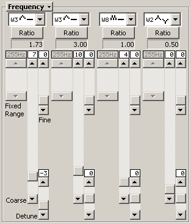
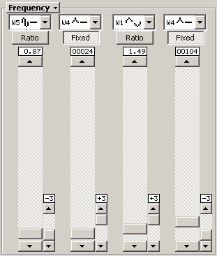

Frequency Controls

All of the frequency controls are grouped by operator, with operator 1
on the left, followed by operators 2, 3, and 4.
Menu Button
The label for this section is a button which brings up a menu, and this is
documented in the section on Menu Buttons.
Waveform Selector
This combo box is where you set the waveform for the operator. The
TX81Z has eight different waveforms that you can use for each operator.
Wave 1 (the sine wave) is the simplest waveform, the one that will
yield the fewest harmonics. The waveforms more or less get more
complex as you increase the value.
The combo boxes can be swapped out for a faster method of selected the
waveform. See the section on the One
Click OP & LFO Wave Type Selection option.
Ratio/Fixed Mode Button
This selects whether or not the frequency of the operator follows the
keyboard (ratio), or stays the same over the entire keyboard (fixed).
Ratio is typically used for the tonal part of the sound and fixed is
typically used for the atonal part of a sound or for special effects,
like the click of a jazz organ or whatever.
Frequency Indicator
This will tell you what frequency is currently dialed up for the
operator. If the operator is set to ratio mode, then the indicator
will tell you the ratio, which is determined by the values of the
coarse and fine frequency settings. If the operator is set to fixed
mode, the indicator will contain the fixed frequency value, which is
a combination of the fixed range, coarse frequency, and fine frequency
settings.
Fixed Frequency Range
This control is disabled when the frequency mode of the operator is
set to Ratio. When it's set to Fixed, this more or less
acts as a multiplier for the coarse and fine frequency settings and
sets their overall range.
Coarse Frequency
This sets the "coarse" frequency for the operator. I've tried to come
up with a definition for that term, but all I can say is that it
changes the frequency in larger increments than the fine setting. If
the operator is set to Fixed mode, this will only change the
value for every fourth setting in the whole range. In other words,
the bottom two bits of this value are ignored by the unit in fixed mode.
Yeah, it's strange.
Fine Frequency
I haven't come up with a clear definition of "fine" frequency either.
It's the smallest possible change you can make to the base frequency
value.
Detune
Detune detunes the operator a little bit. It doesn't change the
frequency shown in the display.
Simplified Frequency Controls

If you go into the Options menu of the voice editor and turn on
Simplified Frequency Selection,
this will swap out the normal base frequency controls and replace them
with a single slider that you can use to set the frequency. The
frequencies are in sorted order (sort of). See the section on
Simplified Frequency Selection for
more information.